LAS ACTUALES DEFINICIO- NES CIENTÍFICAS ALTAS CA- PACIDADES.
En el 2003 había transcurrido un tercio de siglo de las definiciones científicas de Altas Capacidades de Marland-1972. Era necesario incorporar los importantísimos avances de las Neurociencias. En el ámbito educativo era necesario incorporar los fundamentales avances científicos de la Neurodidáctica.
La Universidad de Girona había decidido incorporar estos conocimientos de la mano del Prof. Josep de Mirandés, que impulsó y coordinó las nuevas y actuales definiciones científicas con la co-autoría de 67 científicos especializados de diferentes países. Inicialmente se conocieron como Definiciones Científicas Universidad de Girona-2.005. Más tarde, en el 2.007 fueron asumidas por el Consejo Superior de Expertos en Altas Capacidades, con la denominación: “Definiciones Científicas Altas Capacidades”. Constituyeron la base científica para la elaboración de la nueva Ley Orgánica de Educación (LOE) y asumidas por la comunidad científica. Son las primeras definiciones científicas que parten de una definición de inteligencia humana.
Estas actuales definiciones inician una nueva visión científica de estos fenómenos de la inteligencia humana que se conoce como “El Nuevo Paradigma de la Superdotación y de las Altas Capacidades”.
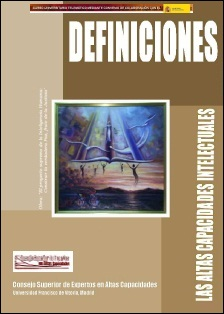
ACCESO A LAS ACTUALES DEFINICIONES CIENTÍFICAS
EL CONSEJO GENERAL DE LOS COLEGIOS OFICIALES DE PSICÓLOGOS, ENTREVISTA AL PROF. JOSEP DE MIRANDÉS.
Para dar a conocer a los Psicólogos del Estado español los avances científicos que nos llevan al Nuevo Paradigma de la Superdotación y de las altas Capacidades, el Consejo General de los Colegios de los Colegios Oficiales de Psicólogos hizo al Prof. Josep de Mirandés esta entrevista que dicha institución publicó en su revista oficial INFOCOP (13-06-2007).
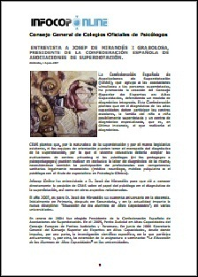
RESPUESTAS A LOS PARLA- MENTAROS.
Estas fueron las respuestas que ofreció el Prof. Josep de Mirandés a las preguntas que le formularon los parlamentarios de los diferentes partidos políticos.
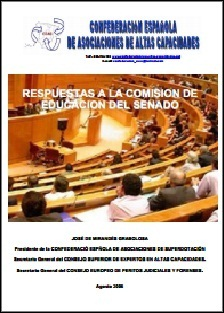
CONFERENCIA EN LA UNI- VERSIDAD DE NAVARRA “LOS CRITERIOS DE LOS PADRES” (22-4-2005).
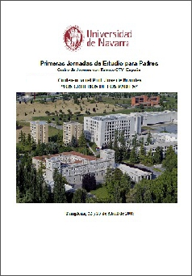
EL MODELO DE ADAPTACIÓN CURRICULAR PARA ALUMNOS DEALTAS CAPACIDADES.
Existían varios modelos para que los Maestros y Profesores puedan diseñar y desarrollar adaptaciones curriculares para alumnos con discapacidades, cuya práctica está bastante generalizada, pero no existía ningún modelo para las diferentes, difíciles y desconocidas adaptaciones curriculares que prescribe la Ley Orgánica de Educación para los alumnos de altas capacidades. El Prof. José de Mirandés lo creó. En 1999. Desde entonces permite que muchos de estos alumnos puedan recibir la educación diferente a la ordinaria que necesitan. Posteriormente El Consejo Superior de Expertos en Altas Capacidades lo adoptó y es material de trabajo del curso La Educación de los Alumnos de Altas Capacidades del Ministerio de Educación y de varias universidades.
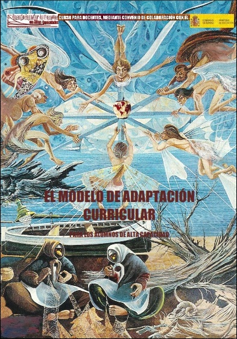
EL GLOSARIO DE TÉRMINOS RELACIONADOS A LAS ALTAS CAPACIDADES Y LA INNOVA- CIÓN EDUCATIVA.
Tras la creación de las actuales Definiciones Científicas Altas Capacidades se puso de manifiesto la necesidad de unificar el vocabulario entre los investigadores científicos del cerebro humano y los educadores, creando El Glosario de Términos Relacionados a las Altas Capacidades, que incluye la Pedagogía, el Derecho y las diferentes Neurociencias. Posteriormente ha sido asumido por el Consejo Superior de Expertos en Altas Capacidades y forma parte del material de estudio del curso La Educación de los Alumnos de Altas Capacidades del Ministerio de Educación.
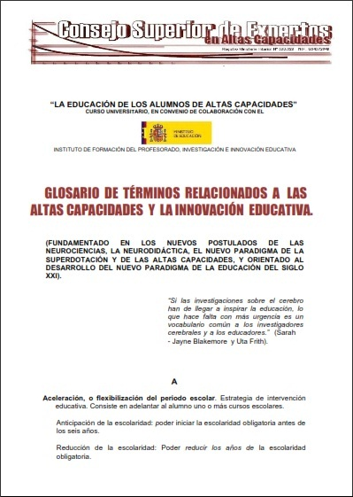
LOS ESTILOS DE APRENDIZA- JE DE LOS ALUMNOS SUPER- DOTADOS.
Los días 5, 6 y 7 de julio de 2004 tuvo lugar en Madrid el Primer Congreso Internacional de Estilos de Aprendizaje, Fue organizado por la Universidad Nacional de Educación a Distancia y otras 15 universidades españolas y de diferentes países. Encargaron al Prof. Josep de Mirandés la elaboración y presentación de la Ponencia “Los Estilos de Aprendizaje de los Alumnos Superdotados”, que contiene las claves acerca de cómo el cerebro de estos alumnos procesa la información y aprende, y de cómo en El Nuevo Paradigma de la Superdotación se conciben los procesos de enseñanza-aprendizaje, no sólo para el desarrollo de los más capaces, sino también para el potenciamiento de todos.
Constituye una herramienta básica para maestros y profesores y para padres, para que a través del desarrollo de los talentos de los alumnos más capaces se pueda ofrecer la educación de calidad a todos los alumnos. Para ello, el Prof. Josep de Mirandés la ha ido completando y actualizando.
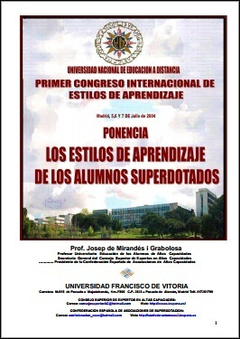
GOBIERNO DE ANDALUCÍA. CURSO DE FORMACIÓN A LOS E.O.E.P.
Esta es la conferencia: “El Centro Educativo y su Respuesta a la Alta Capacidad”, del Prof. Josep de Mirandés, en el Curso de Formación a los miembros de los Equipos Oficiales de Asesoramiento Psicopedagógico de los centros educativos, que tuvo lugar en el Centro de Formación del Profesorado de Linares (5, 6 y 7 de abril de 2011), organizado por la Junta de Andalucía.
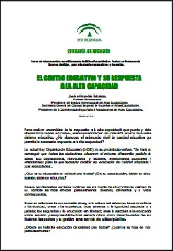
GOBIERNO DE CATALUÑA. REVISTA CIENTÍFICA “PARA- DIGMES”.
Este es el Artículo “Ante el Nuevo Paradigma de la Superdotación y de las Altas Capacidades” del Prof. Josep de Mirandés publicado en la Revista científica de la Generalitat de Cataluña. Monográfico “La gestión del Talento” (Octubre de 2008)

COMPARECENCIA DEL PROF. JOSEP DE MIRANDÉS EN EL PARLAMENTO DE CATALUÑA.
Invitado por el Presidente del Parlamento de Cataluña, el Prof. Josep de Mirandés realizó esta comparecencia en el Parlamento, el 22 de abril de 2004, para informar a Sus Señorías de la situación de los alumnos de altas capacidades en las aulas.
CONFERENCIA EN LA UNI- VERSIDAD DE CASTILLA-LA MANCHA “SUPERDOTADOS Y SOCIEDAD: ASOCIACIONES Y ACTIVIDADES”(Julio 2003).
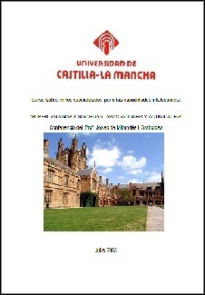
CONFERENCIA EN EL CLUB DIARIO DE MALLORCA.
Con el cáncer en estado avanzado, y con la bomba de quimioterapia puesta el 7 de junio de 2011 el Prof. Josep de Mirandés se trasladó a Palma de Mallorca para pronunciar la conferencia “El Nuevo Paradigma de la Superdotación y de las Altas Capacidades”, en la sala de conferencias del Club Diario de Mallorca, organizada por este diario. Esta es una de sus conferencias no en una universidad o en una institución académica, sino abierta al público y orientada a la concienciación social. A su término concedió esta entrevista a Diario de Mallorca, que publicó en su edición del día siguiente.
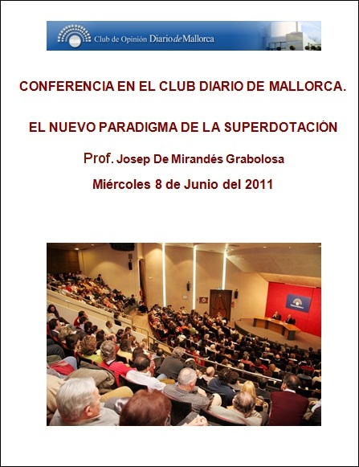
EL MODELO DE DIAGNÓSTICO CLÍNICO INTEGRADO.
La aceptación científica de la existencia de factores clínicos de carácter emocional y motivacional, en las altas capacidades supuso un replanteamiento en profundidad de su diagnóstico. Lo realizó el Prof. Josep de Mirandés en El Modelo de Diagnóstico Clínico Integrado. Posteriormente fue asumido por el Consejo Superior de Expertos en Altas Capacidades y forma parte del material de estudio del curso para los docentes La Educación de los Alumnos de Altas Capacidades del Ministerio de Educación.
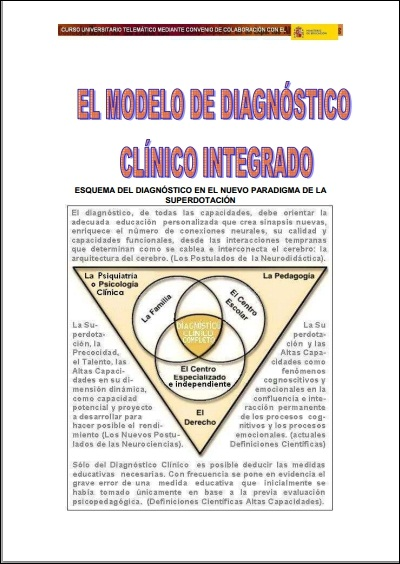
CONFERENCIA EN LA UNI VER- SIDAD DE BARCELONA:“LA TEORÍA DE JOSEPH RENZULLI EN EL FUNDAMENTO DEL NUE- VO PARADIGMA DE LA SUPER- DOTACIÓN Y DE LAS ALTAS CAPACIDADES”. En esta conferencia del Prof. Josep de Mirandés, en la Universidad de Barcelona (23-04-2001) explica la evolución de las diferentes teorías científicas, a la luz de las Neurociencias, hasta alcanzar El Nuevo Paradigma de la Superdotación y de las Altas Capacidades 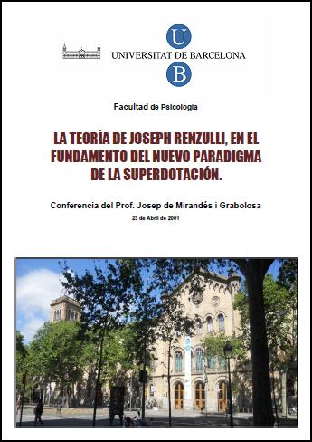
SENADO DE ESPAÑA. CREA- CIÓN DE LA NUEVA LEY ORGÁNICA DE EDUCACIÓN. Cuando el Gobierno Español, en el 2005, decidió crear una nueva Ley Orgánica de Educación (LOE), el Prof. Josep de Mirandés, en su condición de Presidente de la Confederación Española de Asociaciones de Altas Capacidades, recogió todas las reivindicaciones de las asociaciones de altas capacidades y de los expertos especializados para que la nueva Ley Orgánica recogiera el Modelo de Escuela Inclusiva, y el derecho de todos estos alumnos a una educación diferente a la ordinaria adaptada a la diferente forma de procesar la información y aprender de su cerebro: una adaptación curricular precisa. Ello no sólo para los alumnos superdotados, sino también para los dotados de uno o varios talentos, los alumnos con precocidad intelectual; para a través de estos alumnos potenciar el rendimiento de todos. Todas las reivindicaciones y directrices del Prof. Josep de Mirandés fueron incorporadas en la nueva Ley Orgánica de Educación. 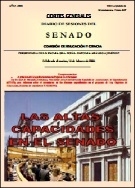 ACCESO A SU CONFECENCIA EN EL SENADO EL 14 -2-2006
LA EDUCACIÓN DE LOS MAS INTELIGENTES. La parte del libro La Educación Inteligente, del Prof. Josep de Mirandés (Editorial Temas de Hoy, 2008) 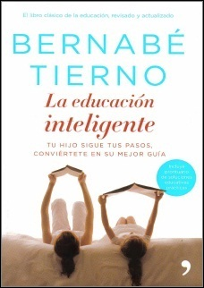
CONFERENCIA “LA PSICOO- NCOLOGÍA CURATIVA” EN LA UNIVERSIDAD DE BARCELONA (24.4-2004). 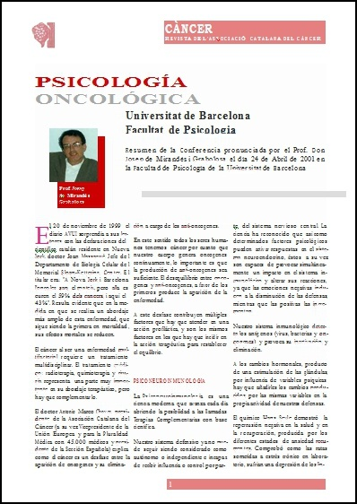
CONFERENCIA EN LA ACA- DEMIA DE CIENCIAS MÉDICAS DE CATALUÑA Y BALEARES. Organizada por la Sociedad Catalana de Psiquiatría Infanto-Juvenil, el Prof. Josep de Mirandés presentó a los Psiquiatras de Cataluña y Baleares los factores clínicos implicados en El Nuevo Paradigma de la Superdotación y de las Altas Capacidades, mediante esta conferencia en la Academia de Ciencias Médicas de Cataluña y Baleares, el 26 de abril de 2006 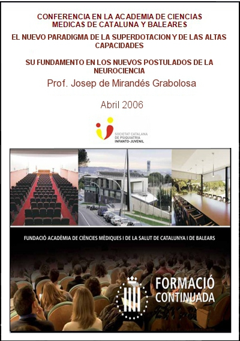 VER SÍNTESIS DE LA CONFERENCIA
CONFERENCIA DE INAUGURA- CIÓN DEL CURSO 2011-2012 DEL INSTITUTO INFANTA ELENA DE JUMILLA, MURCIA. Conferencia “Altas Capacidades, una Medida de Atención a la Diversidad” 27 de octubre de 2011. Reproducimos la síntesis de la conferencia del Prof. Josep de Mirandés en el documento titulado “Algunas Ideas Básicas” que contiene criterios científicos de diferentes expertos que fundamentan el necesario cambio educativo que debe producirse, en estos inicios del siglo XXI, para alcanzar la educación de calidad para todos los alumnos. 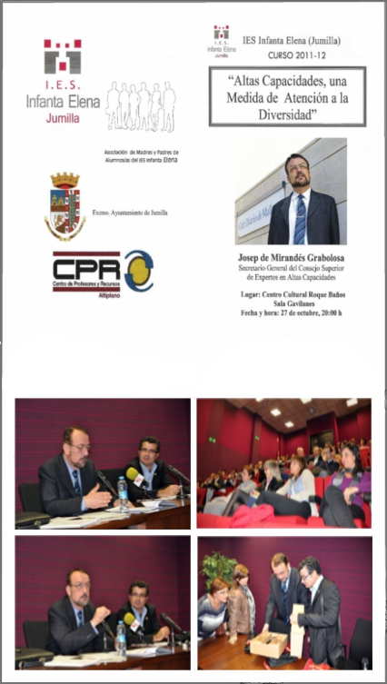
|
|---|